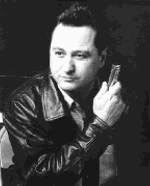
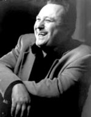

Sugar Ray Norcia записал сольных альбом столько, что хватило бы пальцев одной руки, но количество записей, на которых он выступал как сессионный музыкант - бесчисленно. Тем не менее, он остается одним из наиболее самобытных и интересных харперов, представляющих стиль East Coast (музыка восточного побережья в чем-то похожа на своего западного брата, но, на мой взгляд, более приближенна к традиции).
Рэй - великолепный певец, не даром он был лидером-вокалистом в одной из самых известных Jump-Blues групп - “Roomful of Blues”. Его традиция пения уходит корнями к бархатным балладам Nat King Cole. Звучание губной гармоники Рэя - очень разнообразно: от традиции до электрических изысков Города Ветров, современного блюза, однако, все это он делает через призму East Coast. Первую запись Sugar Ray Norcia в своем уже неизменном амплуа выпустил в 1979 году. В 1982 году он стал участником группы Ронни Ирла - “Ronnie Earl and the Broadcasters featuring sensational Sugar Ray”.
В 1989 году выходит “Knockout”, а в 1991 “Don't Stand in My Way”, именно в это время Рэй в составе Roomful'ов. В 1998 году он покидает их и выпускает свой четвертый альбом (наиболее любимый критиками) - “Sweet and Singin'”.

В своей лирике Рэй прибегает к жизненному опыту, наполняя песни живыми историями.
В 1999 году его принимают в свои ряды принимают суперхарпы: James Cotton, Billy Branch, Charley Musselwhite, результат - великолепный альбом с одноименным названием - “SuperHarps” - номинант на Грэмми.
2001г. - “Rockin' Sugar Daddy”. 2003г. - “Sugar Ray & the Bluetones Featuring Monster Mike Welch” - с молодым гением электрогитары. Ну и сколько пальцев Вам понадобилось?
Хочется отметить, что Рэй известен в основоном как член Roomful'ов, напарник и друг Ronnie Earl'а и, прежде всего, как великолепный клубный и сессионный музыкант.
Константин Колесниченко [aka Wheel]
bluesharp.inkharkov.com